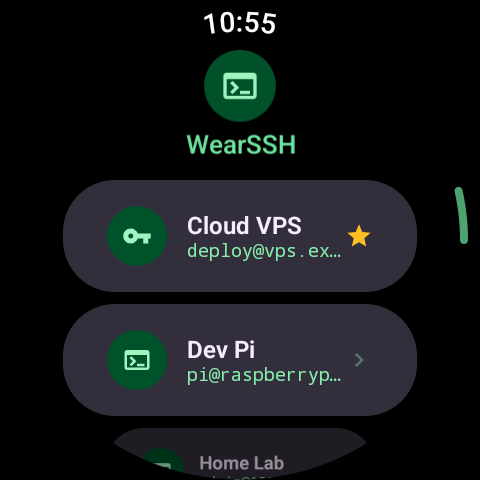
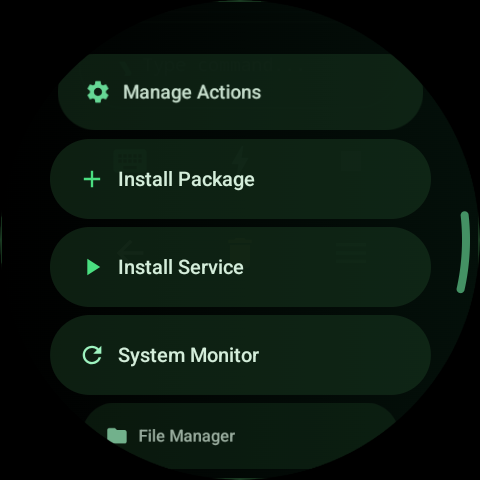
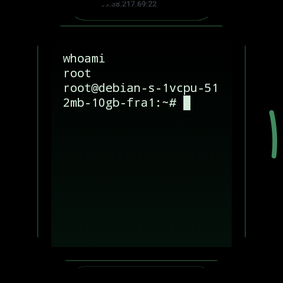

Manage your servers from your wrist. A full-featured SSH client — a real terminal session, now on your smartwatch.
No need to pull out your phone. Connect to your servers from your watch, control, and intervene.
Secure connection with password or SSH key, real interactive terminal session.
Save your frequently used commands and run them with a single tap — no more typing loops.
Save all your servers, switch between them instantly. Organized and always at your fingertips.
Add to your watch face, connect to your favorite server with a single tap — in seconds.


